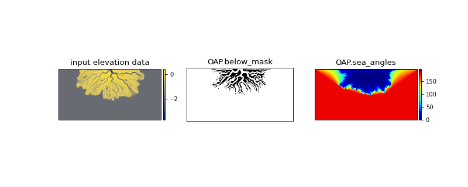

deltametrics.plan.OpeningAnglePlanform¶
- class deltametrics.plan.OpeningAnglePlanform(*args, **kwargs)¶
Planform for handling the Shaw Opening Angle Method.
This Planform (called OAP for short) is a wrapper/handler for the input and output from the
shaw_opening_angle_method(). The OAP is a convenient way to manage extraction of a shoreline or a delta topset area.Moreover, the OAP can be used as the input for many types of Mask objects, so it is often computationally advantageous to compute this Planform once, and then use it to create many different types of masks.
Examples
Instantiate the OpeningAnglePlanform from an inverted binary mask of elevation data (i.e., from an
ElevationMask).Note that the below example is the most verbose method for creating the OAP. Consider available static methods.
>>> golfcube = dm.sample_data.golf() >>> _EM = dm.mask.ElevationMask( ... golfcube['eta'][-1, :, :], ... elevation_threshold=0)
# extract a mask of area below sea level as the # inverse of the ElevationMask >>> _below_mask = ~(_EM.mask)
>>> OAP = dm.plan.OpeningAnglePlanform(_below_mask)
The OAP stores information computed from the
shaw_opening_angle_method(). See the two properties of the OAPbelow_maskandsea_angles. - __init__(*args, **kwargs)¶
Init.
EXPECTS A BINARY OCEAN MASK AS THE INPUT!
Note
needs docstring.
Methods
__init__(*args, **kwargs)Init.
connect(CubeInstance[, name])Connect this Planform instance to a Cube instance.
from_ElevationMask(ElevationMask, **kwargs)Create an OpeningAnglePlanform from an ElevationMask.
from_arrays(*args)Create directly from arrays.
from_elevation_data(elevation_data, **kwargs)Create an OpeningAnglePlanform from elevation data.
from_mask(UnknownMask, **kwargs)Wraps
from_ElevationMask.Attributes
Mask for below sea level pixels.
Alias sea angles.
Planform name.
Maximum opening angle view of the sea from a pixel.
Planform shape.
- property below_mask¶
Mask for below sea level pixels.
This is the starting point for the Opening Angle Method solution.
See figure in main docstring for visual example.
- property composite_array¶
Alias sea angles.
- connect(CubeInstance, name=None)¶
Connect this Planform instance to a Cube instance.
- static from_ElevationMask(ElevationMask, **kwargs)¶
Create an OpeningAnglePlanform from an ElevationMask.
Note
Keyword arguments are passed to the OpeningAnglePlanform, and thus passed to
shaw_opening_angle_method().- Parameters
ElevationMask (
ElevationMask) – TheElevationMaskto be used to create the OpeningAnglePlanform.
Examples
>>> golfcube = dm.sample_data.golf() >>> _EM = dm.mask.ElevationMask( ... golfcube['eta'][-1, :, :], ... elevation_threshold=0) >>> OAP = dm.plan.OpeningAnglePlanform.from_ElevationMask( ... _EM)
- static from_arrays(*args)¶
Create directly from arrays.
Warning
not implemented.
- static from_elevation_data(elevation_data, **kwargs)¶
Create an OpeningAnglePlanform from elevation data.
This process creates an ElevationMask from the input elevation array, and proceeds to make the OAP from the below sea level mask.
Note
Keyword arguments are passed to the ElevationMask and to the OpeningAnglePlanform, and thus passed to
shaw_opening_angle_method().Important
The elevation_threshold argument is implicitly required in this method, because it is required to instantiate an
ElevationMaskfrom elevation data.- Parameters
elevation_data (
ndarray) – The elevation data to create the ElevationMask that is in turn used to create the OpeningAnglePlanform.
Examples
>>> golfcube = dm.sample_data.golf() >>> OAP = dm.plan.OpeningAnglePlanform.from_elevation_data( ... golfcube['eta'][-1, :, :], ... elevation_threshold=0)
- static from_mask(UnknownMask, **kwargs)¶
Wraps
from_ElevationMask.
- property name¶
Planform name.
Helpful to differentiate multiple Planforms.
- property sea_angles¶
Maximum opening angle view of the sea from a pixel.
See figure in main docstring for visual example.
- property shape¶
Planform shape.
{kind=link}
{kind=link}